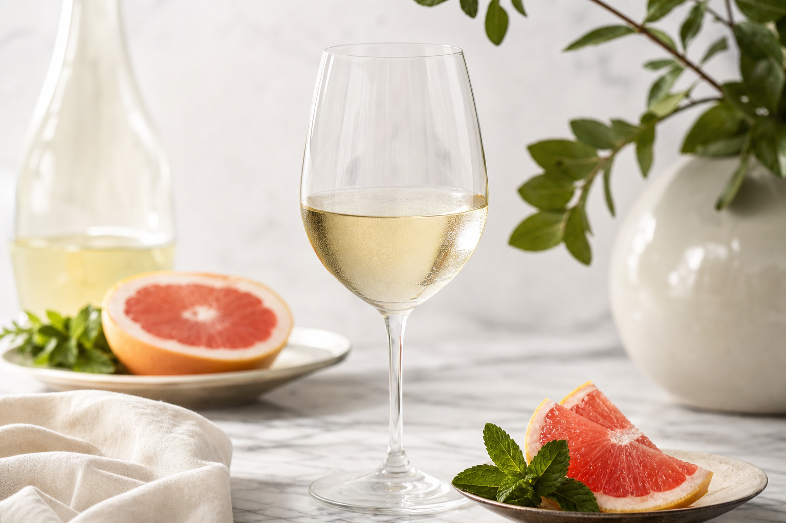

【活動レポート】ワインから学ぶブランド戦略——「物語」と「計測」で語る、経営者の教養
1. テイスティングは「感覚」ではなく「計測」——4つの評価軸
ワインの品質を見極める際、プロは「美味しい・まずい」という好悪だけで判断しません。外観（輝き・深み）、香り（複雑性・熟成度）、味わい（骨格・バランス）、総合（評価・価値）という4軸で、感覚を構造化して読み解きます。
経営においても同様です。ブランドの印象を「なんとなく良い」で終わらせず、見た目の一貫性、伝えるメッセージの層の深さ、提供体験のバランス、そして市場における総合的な価値——これらを分けて観察することで、改善のポイントが明確になります。
輝き・深み——第一印象の「見た目の品質」
複雑性・熟成度——語れる要素の多さ
骨格・バランス——口中での構造と調和
評価・価値——全体としての格付け
2. 高いワインを見抜く「4つの定量的チェックポイント」
「美味しい・美味しくない」の好みではなく、AとBをデータとして比較・鑑定する——そのための具体的な指標が次の4つです。
- 香りの数： 5種類以上の香りが感じ取れるか（複雑性の測定）
- 滑らかさ： 口当たりに絹のような滑らかさがあるか
- 密度： 豊かな果実の凝縮感・集中度
- 余韻： 飲み込んだ後も味わいが20秒以上続くか
顧客が語れる体験の数、接点の滑らかさ、サービスの密度、取引後も続く印象——主観だけに頼らず、比較可能な基準を持つことが、高付加価値ブランドの土台になります。
3. 香りの複雑性——「1〜2要素」か「5要素以上」か
例：「イチゴジャム」のみ——シンプルで単層的
時間が経っても香りは大きく変化しない
イチゴ＋バラ＋腐葉土＋スパイス＋なめし皮
注いで15分後・30分後と香りが進化する
優れたブランドも同じ構造を持ちます。単一のキャッチコピーだけでなく、歴史・職人・土地・顧客の声など複数のレイヤーが重なり、時間とともに理解が深まる「物語の進化」がある——それが記憶に残るブランド体験を生みます。
4. 余韻（コーダリー）——価格と比例する最大の指標
ワイン界では1コーダリー＝1秒という単位で余韻の長さを語ります。余韻の長さは、価格と比例する最大の指標とされています。
| 区分 | 余韻の目安 | 特徴 |
|---|---|---|
| デイリーワイン | 3〜5秒 | 香りと味がすぐに消える |
| 高級ワイン | 10〜20秒以上 | 長く心地よく続く |
ビジネスの文脈では、これは「体験の持続性」に相当します。契約の瞬間だけ印象が良いのか、それともその後も信頼感や満足感が続くのか——ブランドの真価は、接点が終わったあとにどれだけ残るかで測られます。
5. ヴィンテージ＝その年（土地）を表現する「作品」
ヴィンテージとは単なる収穫年のラベルではありません。一年に一度しか生まれない「作品」が瓶に封印される——という考え方です。
テロワール（その土地） × 気候・季節（その年） × 収穫（最適なタイミング）
＝ その年だけの「作品」
同じ畑でも、日照・雨量・風の条件が毎年異なり、造り手はその年の個性を最大限に引き出す。優劣を競うのではなく、その瞬間の美しさを物語として届ける——これは、企業ブランドが「自分たちにしか語れない物語」を持つことの本質にも通じます。
6. 品種が教える「個性設計」——4つの代表的ブドウ
ワインの世界では、品種ごとに明確な個性があります。ブランドがターゲットや文脈に合わせて「どの個性を選ぶか」を学ぶヒントにもなります。
ソーヴィニヨン・ブラン——爽快感の爆弾
ロワール地方発祥。グレープフルーツやパッションフルーツ、ハーブの香りとシャープな酸味が特徴。塩焼きのスズキや天ぷら（塩）など、素材の味を引き立てるペアリングに最適です。

シャルドネ——ワイン界のカメレオン
冷涼地では繊細でミネラル感のあるスタイル、温暖地では豊かで力強いスタイルへ。樽の使い方や造り手の意図で表情が大きく変わる、適応力の高い品種です。
カベルネ・ソーヴィニヨン——赤ワインの王様
厚い果皮と高いタンニン、力強い骨格と長期熟成のポテンシャル。カシス、スパイス、杉、バニラの香り。ステーキや熟成チーズとの相性は抜群です。

ピノ・ノワール——気まぐれな女王
薄い果皮から生まれる繊細でエレガントな味わい。マグロの赤身、煮物、鰹のたたきなど和食との相性も秀逸。14〜16℃、大きめのグラスで香りを開かせるのがポイントです。

7. 五感で見分ける実践チェック——色・香り・味わい
実際のテイスティングでは、五感を順に使います。次の3ステップを意識するだけでも、鑑賞の精度は大きく変わります。
- 1色合い——白背景にかざし、濃淡・色相・透明度を確認する
- 2香り——グラスを回し、果実→花→スパイス→熟成香と段階的に嗅ぐ
- 3味わい——舌全体で広げ、噛むように味わい、余韻まで追う
「違いを楽しむことが、ワインをもっと好きになる一歩」——ビジネスシーンでも、相手の好みを聞くのではなく、共通の言語（色・香り・余韻）で会話を深められる教養になります。
まとめ：物語と計測——経営者の教養としてのワイン
ワインから学べるブランド戦略の核心は、「語れる物語」と「測れる品質」の両立にあります。テロワールとヴィンテージが語る独自性、香りの複雑性と余韻が示す体験の深さ、品種ごとの個性設計——これらはいずれも、経営・接客・人材育成の現場に転用できる思考です。
ニューライフ・デベロップメント・グループとしても、お客様やパートナーとの関係づくりにおいて、一過性の印象ではなく、続く価値と語れるストーリーを大切にしていきたいと改めて感じる内容でした。Enjoy Wine, Enjoy Life——違いを楽しみ、データとして記録し、ブランドとして届ける。その姿勢を、日々のビジネスにも活かしていきます。